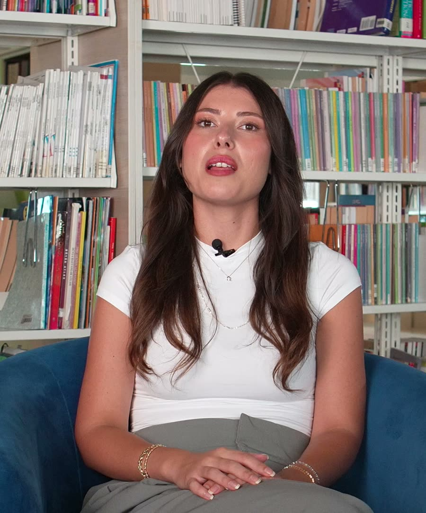
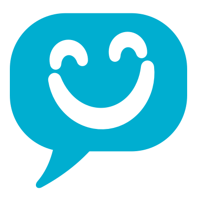

Türk ve yabancı uzman öğretmenler
Öğretmenlerimizi keşfedin, çocuğunuzun öğretmenini derse başlamadan tanıyın.
Yeni ödül! Bett UK 2026’da “En İyi Dil Uygulaması” ödülünü kazandık İlk tanışma dersi ücretsiz Ücretsiz Tanışma Dersi
Ödül! Bett UK 2026 ödüllü Ücretsiz Tanışma Dersi
Canlı online dil okulu · 4 yaştan yetişkine
Uzman öğretmenlerle canlı ve eğlenceli online dersler. İngilizce, Almanca, Fransızca, İspanyolca, Rusça, Çince ve Türkçe; grup ya da bire bir, size uygun saatte.Uzman öğretmenlerle canlı online dersler. 7 dil, size uygun saatte.
Yaş grupları
Diller
Eğlenirken öğrenmesi çok güzel.
Öğretmen kadromuz
Türk ve yabancı uzmanlar.
7 dil
İngilizceden Rusçaya, çocuklara ve yetişkinlere tek okulda.
Bett UK 2026
“En İyi Dil Uygulaması” ödülü, dünyanın en büyük eğitim teknolojileri fuarlarından birinde.
TÜBİTAK
TEYDEB Teknoloji ve Yenilik Programı kapsamında hibe desteği.
TÖMER
Ankara Üniversitesi iş birliğiyle CEFR uyumlu sertifika.
Çocuğunuz yedi dilden birini Türk ve yabancı öğretmenlerle öğrenir. Sınıfı bütçenize göre seçersiniz, gelişimi panelden izlersiniz.

Öğretmenlerimizi keşfedin, çocuğunuzun öğretmenini derse başlamadan tanıyın.
4 yaştan yetişkine, 7 dilde canlı online ders seçenekleri.
Grup, mini grup ya da bire bir. Çocuğunuza uyanı seçin.
Yapay zekâ destekli uygulamayla derslerin arasında kısa tekrarlar.

Öğretmen notu, geri bildirim ve beceri gelişimi tek ekranda. Geçmiş dersler kayıtlı ders bankasında.
Ankara Üniversitesi TÖMER iş birliğiyle. Başlangıç seviyesi ücretsiz tanışma dersinde belirlenir.
Ücretsiz Tanışma DersiEn çok merak edilen sorularımızı Öğretmen ve Eğitim Danışmanlarımız yanıtlıyor.
Sorunuz burada yok mu?
WhatsApp hattımız: +90 539 516 70 70
Dört yaş grubu, Ön A1’den C1’e altı basamak. Her çocuk kendi hızında, basamak basamak ilerler.
| Program | Yaş | Odak | Seviye | Tanışma dersi |
|---|---|---|---|---|
| Minikler | 4–6 yaş | Oyunla dinleme ve konuşma | Seviye: Ön A1 | Ücretsiz Tanışma Dersi: Minikler, 4–6 yaş |
| Çocuklar | 7–12 yaş | Dört beceri ve günlük kullanım | Seviye aralığı: A1 ile B1 arası | Ücretsiz Tanışma Dersi: Çocuklar, 7–12 yaş |
| Gençler | 13–18 yaş | Okul müfredatı ve sınav hedefleri | Seviye aralığı: A1 ile B2 arası | Ücretsiz Tanışma Dersi: Gençler, 13–18 yaş |
| Yetişkinler | 18+ yaş | Kariyer, seyahat ve akıcı konuşma | Seviye aralığı: A1 ile C1 arası | Ücretsiz Tanışma Dersi: Yetişkinler, 18 yaş ve üzeri |
Seviye yaşa göre değil, ücretsiz tanışma dersinde öğretmeniniz tarafından belirlenir.
Çocuğunuza uyan sınıf büyüklüğünü seçin. Ders başı ücreti, toplam tutarı ve taksit farkını burada açıkça görün.
₺446’dan
ders başı · ₺446–550 aralığında
₺623’ten
ders başı
₺890’dan
ders başı
Toplam 96 ders. Aynı paketi iki şekilde ödeyebilirsiniz; farkı aşağıda görün.
Taksitliye göre ₺9.504 tasarruf
Öğretmenlerimizi dile göre keşfedin. Tanışma dersinizi başvuru sayfasından planlayın.
42 öğretmen gösteriliyor
Bu dil için öğretmen bilgileri resmî listede henüz yer almıyor. Resmî öğretmen listesini görün
Oğlumun İngilizceye olan özgüvensizliği yerini özgüvene bıraktı.
Bengü Hocamızın samimi ve motive edici yaklaşımı sayesinde dersler keyifli dolu dolu geçiyor.
Eğlenirken öğrenmesi çok güzel. Online olması… ders saatlerini duruma göre değiştirme imkanının olması avantaj.
İlk adım ücretsiz. Gerisini çocuğunuzun hızına göre birlikte planlarız.
Formu doldurun, eğitim danışmanımız sizi arasın ve size uygun saati birlikte belirleyin. Öğretmen, tanışma dersinde seviyeyi ve hedefleri belirler.
Grup, mini grup ya da bire bir. Haftada kaç ders, hangi saatlerde; birlikte karar veririz.
Canlı derslerin yanında uygulamada günlük 5–15 dakikalık pratik. Veli panelinden düzenli geri bildirim.
Formu doldurun, eğitim danışmanlarımız sizi arasın.
Kamu kurumları, okullar ve şirketler için kişi sayısına ve hedeflere göre program ve teklif hazırlıyoruz.
Dört adımda, ekibinizin takvimine göre.
Velilerin bize en sık sorduklarını burada topladık.
Sorunuz mu var?
WhatsApp'tan yazın, ekibimiz size dönsün.
E-posta: hello@hurralingo.com
WhatsApp'tan yazÜcretsiz tanışma dersinde öğretmeniniz mevcut dil seviyesini ve hedefleri belirler. İçerik, yaş grubu ve öğrenme ihtiyaçları bu görüşmeye göre planlanır.
İngilizce, Almanca, Fransızca, İspanyolca, Rusça, Çince ve Türkçe. Türk ve yabancı öğretmenlerimiz birlikte çalışır.
Grup dersleri 5–8 kişiyle, mini grup dersleri 2–4 kişiyle yapılır ve sosyal öğrenmeyi öne çıkarır. Bire bir ders, hedefe göre kişisel bir program sunar. Tercihi tanışma dersinde birlikte yaparız.
Evet. Ders saatleri öğretmeninizle birlikte planlanır ve gerektiğinde değiştirilebilir.
Paketleri peşin ya da taksitle ödeyebilirsiniz. Ödemeler Stripe veya iyzico altyapısıyla alınır. Peşin ödemede ders başı ücret daha düşüktür; örnek paketi fiyatlar bölümünde görebilirsiniz.
Yaşa uygun olarak her gün 5 ila 15 dakikalık kısa pratikler öneriyoruz. Bu pratikler, yapay zekâ destekli uygulamada hazır gelir.
Veli ve öğrenci paneli üzerinden dilediğiniz zaman yazabilirsiniz. Öğretmeniniz gelişim hakkında düzenli geri bildirim verir.
Çocuğunuz öğretmeniyle tanışsın, seviyesini birlikte belirleyelim. Size en uygun programı sonra rahatça seçersiniz.
Öğretmenlerimiz, 7 dilÖğretmenlerle tanışın